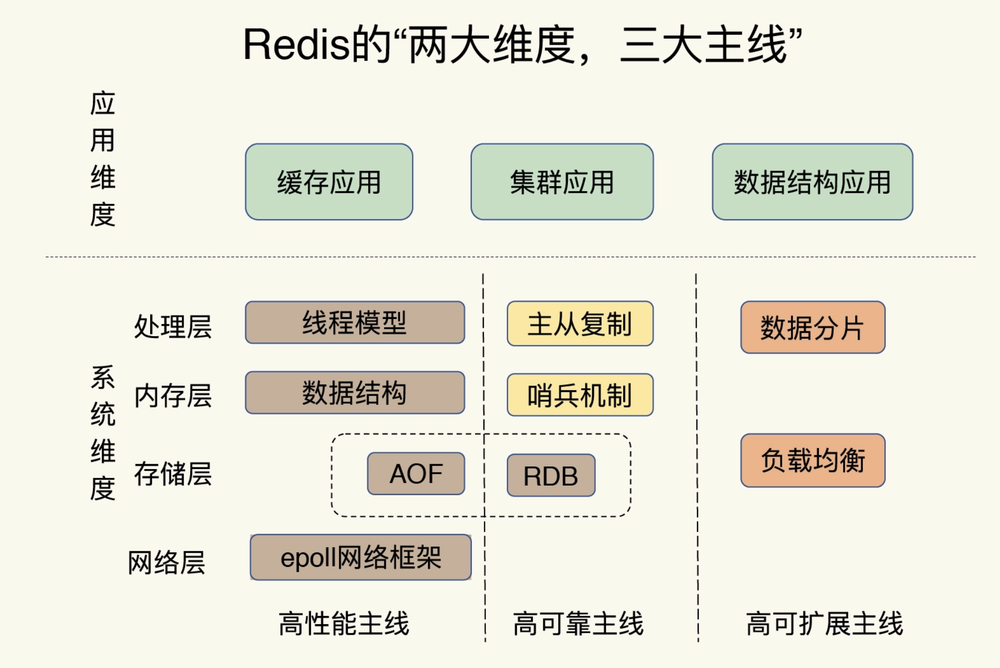
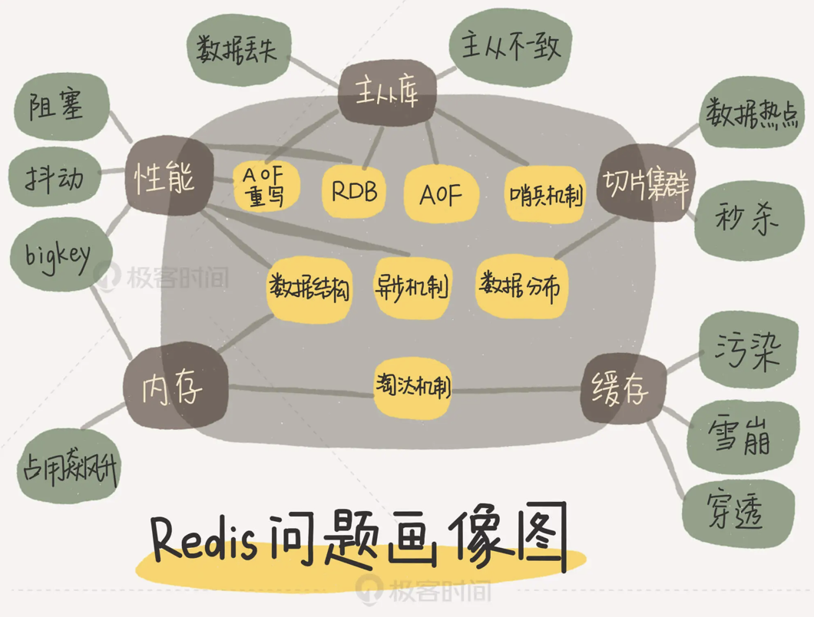
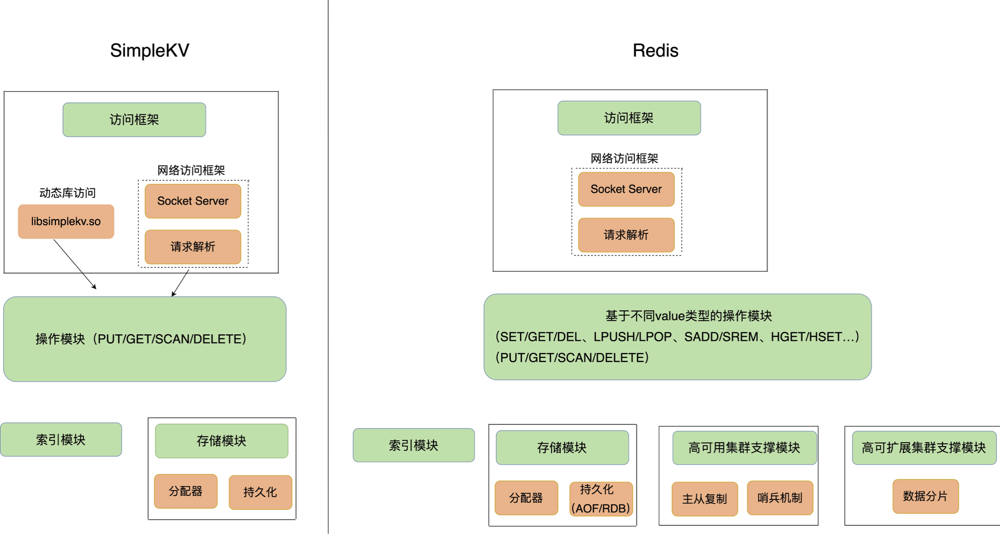

Redis-主线梳理
1. Redis 的两大维度、三大主线：

Redis 问题画像图：（根据问题找解决问题对应的主线，根据主线找到对应的技术点 “问题➡️主线➡️技术点”）

使用 Redis 可能会出现的一些问题：
- 持久化日志（AOF、RDB）带来的读写性能问题
为了保证数据的可靠性，Redis 需要在磁盘上读写 AOF 和 RDB，但在高并发场景里，这就会直接带来两个新问题：一个是写 AOF 和 RDB 会造成 Redis 性能抖动，另一个是 Redis 集群数据同步和实例恢复时，读 RDB 比较慢，限制了同步和恢复速度。
一个可行的解决方案就是使用非易失内存 NVM，因为它既能保证高速的读写，又能快速持久化数据。
- 在 CPU 、 内存、存储持久化、网络通信方面的坑
CPU 使用上的“坑”，例如数据结构的复杂度、跨 CPU 核的访问；
内存使用上的“坑”，例如主从同步和 AOF 的内存竞争；
存储持久化上的“坑”，例如在 SSD 上做快照的性能抖动；
网络通信上的“坑”，例如多实例时的异常网络丢包。
- Redis 的长尾延迟
假设 Redis 处理了 100 个请求，99 个请求的响应时间都是 1s，而有一个请求的响应时间是 100s。那么，如果看平均延迟，这 100 个请求的平均延迟是 1.99s，但是对于这个响应时间是 100s 的请求而言，它对应的用户体验将是非常糟糕的。如果有 100 万个请求，哪怕只有 1% 的请求是 100s，这也对应了 1 万个糟糕的用户体验。这 1% 的请求延迟就属于长尾延迟。
导致长尾延迟的原因：
对于单线程的 Redis 而言，任何阻塞性操作都会导致长尾延迟的产生。可以从 键值对数据结构、持久化机制下的 fork 调用、主从库同步时的 AOF 重写，以及缓冲区溢出等多个方面 考虑。
- 使用 String 类型遇到的问题
使用 String 类型作为存储类型时，由于获取值时需要全量获取出来再解析出具体值，一个是耗时，一个是当数据量大的时候网卡流量撑不住。
2. 一个 K-V 键值数据库的设计应该考虑哪些方面
- 可以存哪些数据类型
- 对数据类型如何操作
- 键值对保存在内存还是外存
- 采用什么访问模式
- 一种是 通过函数库调用的方式供外部应用使用 。这种方式以动态链接库的形式链接到我们自己的程序中，提供键值存储功能
- 另一种是通过网络框架以 Socket 通信的形式对外提供键值对操作，这种形式可以提供广泛的键值存储服务
- 当数据库收到请求后，处理请求的 I/O 模型如何设计。是单线程还是多线程，还是多进程来交互处理请求。
- 如何定位键值对的位置。即根据 key 找到相应 value 的存储位置，进而执行操作。
- 不同操作的具体逻辑如何实现
- 对于 GET/SCAN 操作而言，此时根据 value 的存储位置返回 value 值即可；
- 对于 PUT 一个新的键值对数据而言，SimpleKV 需要为该键值对分配内存空间；
- 对于 DELETE 操作，SimpleKV 需要删除键值对，并释放相应的内存空间，这个过程由分配器完成。
对于 PUT 和 DELETE 涉及到内存的分配，内存的管理依赖存储模块。
- 内存的管理
- 键值数据库的键值对通常大小不一，分配器在处理随机的大小内存块分配时，表现不稳定。一旦保存的键值对数据规模过大，就可能造成较严重的内存碎片问题。
- 采用不同的分配策略，分配效率也不同。
- 如何实现重启后快速提供服务。（持久化功能）
- 实时落盘
- 定期落盘
基础模块

其他功能模块
丰富的数据类型、数据压缩、过期机制、数据淘汰策略、主从复制、集群化、高可用等功能，另外还可以增加统计模块、通知模块、调试模块、元数据查询等辅助功能。